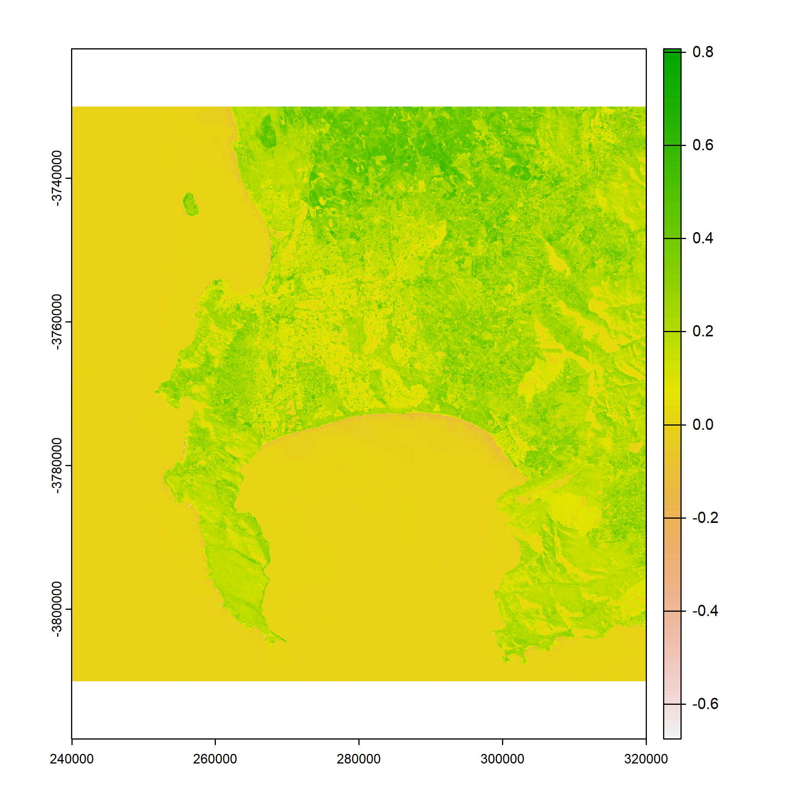
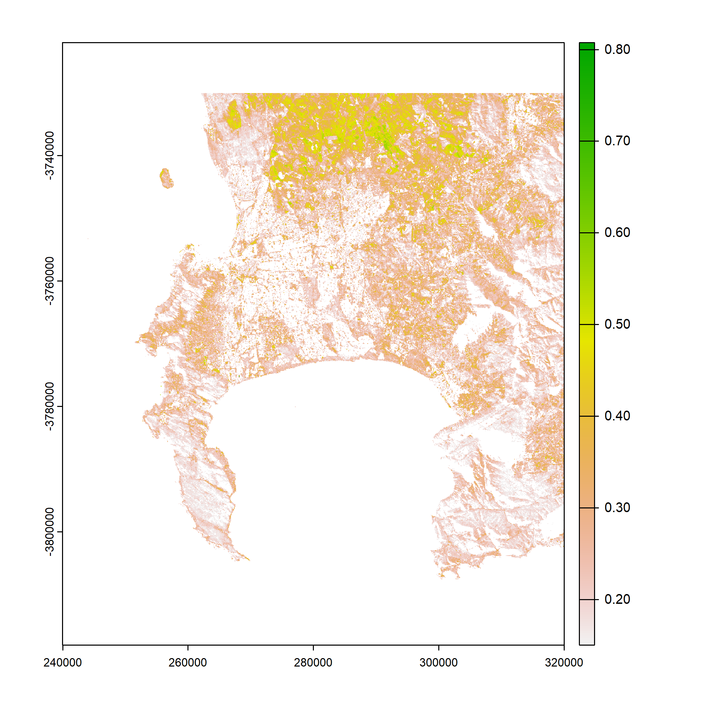
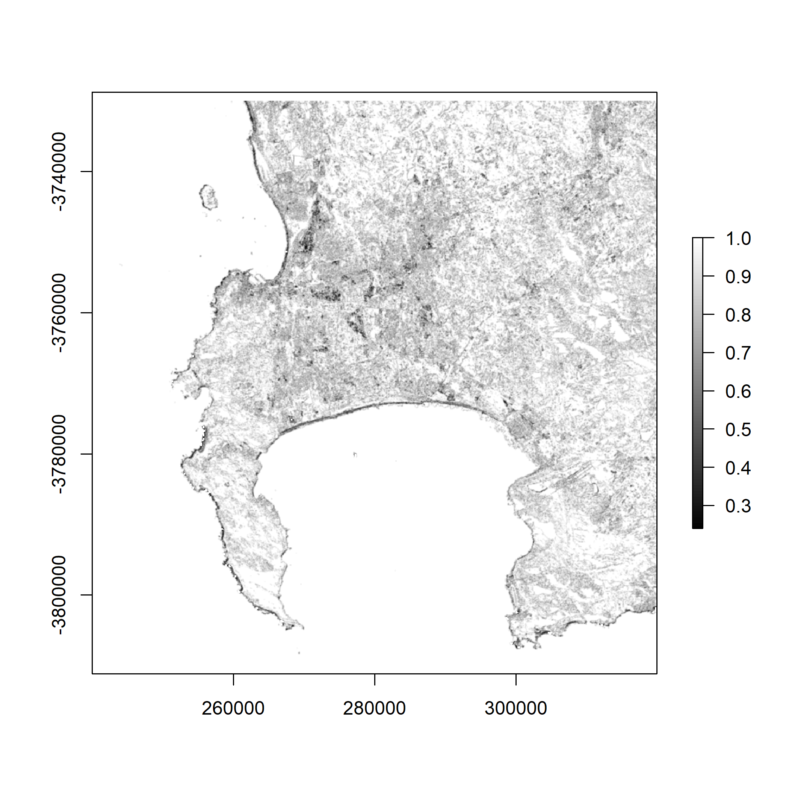
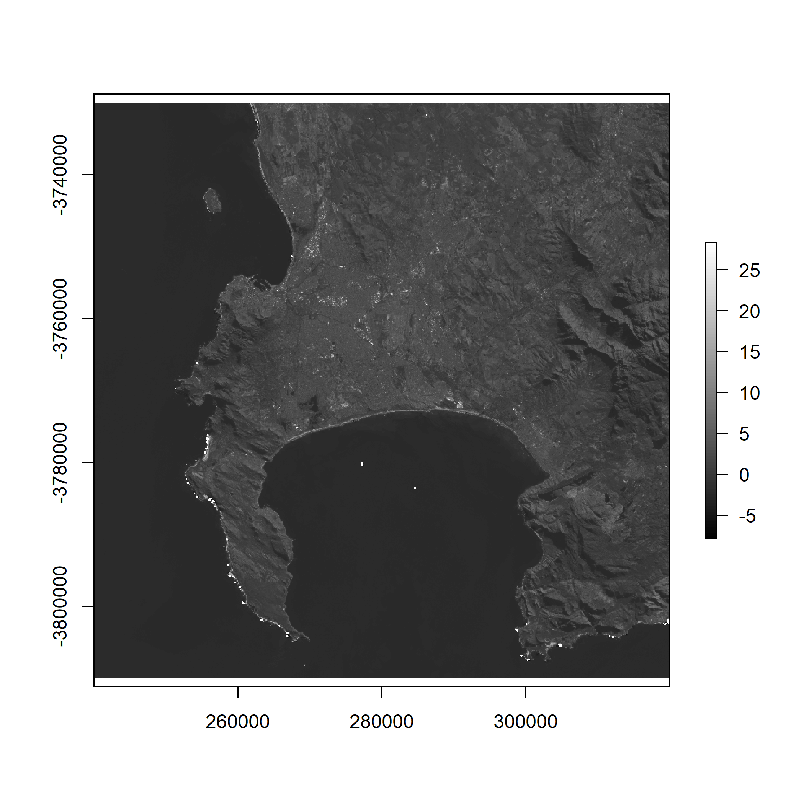
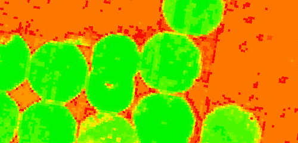

3 Week 3
4 Week 3: Enhancements
4.1 Summary
There are many different types of correction and enhancement possible for remote sensing. Corrections typically are typically applied to remove flaws created by the sensor, atmosphere, or terrain. However, for the purpose of this week, I am going to focus on a couple of enhancements of remote sensing imagery – namely Ratio, Texture, and Principal Component Analysis (PCA).
4.1.1 Ratio: Normalised Difference Vegetation Index (NDVI)
Ratio enhancements use the different spectral signatures of different materials in spectral bands to exaggerate specific features. NDVI uses red and near-infrared spectral bands to draw out healthy vegetation, because healthy vegetation reflects highly in the near infrared wavelength and is absorbed in the red red one. Areas with a high NDVI index represent healthy vegetation. It’s calculated as follows:
\[NDVI= \frac{NIR-Red}{NIR+Red}\]
The image below shows the NDVI for Cape Town using Landsat imagery from 2022. It’s a bit hard to read because of the ocean:

We can get around this by utilising only NDVI values over 0.15. Here the healthy vegetation in the farmland to the North of the city is emphasised. Urban areas are white, as is the ocean. Interestingly, areas that are mountainous or national parks (and high in indigenous fynbos vegetation) do not register on the NDVI. This includes the Cape Point peninsula in the South West of the image below. This may be due to the time of year and the unharvested agricultural areas being extremely high in NDVI relative to indigenous vegetation:

4.1.2 Texture
Texture is pretty cool. Essentially, it’s a measure of each pixel’s similarity (or difference) to the pixels around it. For example, the image below shows homogeneity for Cape Town. It’s calculated using a grey-level co-occurrence matrix (GLCM). This involves creating a matrix for all pixels and their neighbours in an image, and calculating how homogeneous (similar) each pixel is to its neighbours. In the image below, areas with high homogeneity (the ocean, stretches of agricultural land in the north) are white, while areas with significant contrast (such as the coastline) are dark, due to the high contrast between the ocean and beaches.

4.1.3 PCA
Principal Component Analysis (PCA) is a dimensionality reduction algorithm – it allows you to reduce a high dimensional dataset (like a multi-spectral raster file with many bands) into a lower number of dimensions. The first component (or dimension) is selected to explain as much of the variance as possible in each observation. That’s what this image shows: the first principal component for the imagery used above:

4.2 Applications
Of the three techniques I have described above, NDVI probably has the most obvious practical application. It’s easy to see how a vegetation index can be useful for monitoring and predicting crop yields, fire hazards, and drought impacts. This article discusses how it can be used for precision farming by classifying vegetation as this image shows:

The images I’ve generated for texture analysis and PCA are less clear in their immediate use, but that doesn’t mean they aren’t extremely powerful. Texture can, for example, be used for change detection or to classify different land uses. This video, particularly from 17:38 to 20:15, discusses some applications of texture in remote sensing data:
Basically, texture is used to retrieve the areas of an image that are most similar to a target area. It’s very easy to see how that might be relevant to a remote sensing application in an urban environment – it could be used to identify open space, informal areas, flood-prone areas, or a host of different aspects of the built environment.
PCA can be used for a variety of remote sensing applications, such as feature extraction, change detection, and classification. And it’s not particularly new! Munyati (2004) used PCA to detect wetland change in Zambia using imagery from the 1980s and 90s. The study ran PCA on a 12-band image to generate a colour composite that highlighted change detection in the wetland system over time.
4.3 Reflections
I’ve skirted around corrections here and focused on enhancement, probably because enhancements feel exciting and interesting (they let you draw out interesting features of the data) whereas corrections feel painstaking and time-consuming. I know they’re important, but it’s also really exciting to put PCA into use (even if my example above is pretty trivial and doesn’t really offer much more than a grayscale map of Cape Town).
I first encountered PCA last term in the Foundations of Spatial Data Science module. At the time I found it completely intimidating and had to really work in order to understand it. Now I think I get it conceptually (although performing the linear algebra used to transform the dimensionality reduction is beyond me), and it’s fun to be able to use it and understand how and why it’s useful.
Similarly, I had never encountered texture analysis before, but it’s really interesting to learn about its uses in other disciplines (like medical imaging) and to start to get a sense of its value when applied to remote sensing imagery.
This week also made me realise how computationally intensive working with remote sensing data is: these files are big (I don’t want to think about how much hard drive space I’ve used in these first three weeks) and PCA took so long to perform that I ended up just going for a run while my computer finished the process. I’m looking forward to getting into Google Earth Engine when a lot of this will be sped up dramatically.